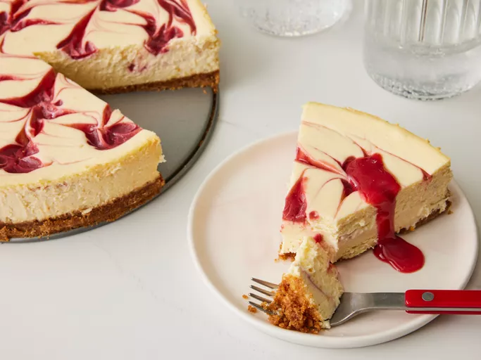

Strawberry Cheesecake
Home

Description
This strawberry cheesecake has a graham cracker crust and creamy filling with swirls of sweetened strawberry sauce. It's perfect for any special occasion!
Ingredients
These are the ingredients you will need to make this strawberry cheesecake recipe:
-
For the crust:
- graham cracker crumbs
- butter
- white sugar
- cinnamon
-
For the filling:
- frozen strawberries
- cornstarch
- cream cheese
- sweetened condensed milk
- lemon juice
- vanilla extract
- eggs
Steps
- Make the crust and press it into the pan. Chill in the refrigerator.
- Blend the strawberries and cornstarch, then boil the sauce until thick and shiny.
- Make the cream cheese filling with the remaining ingredients.
- Assemble the cheesecake according to the detailed instructions below.
- Bake until the cheesecake is almost set, cool, and refrigerate.
- Serve with the reserved strawberry sauce.